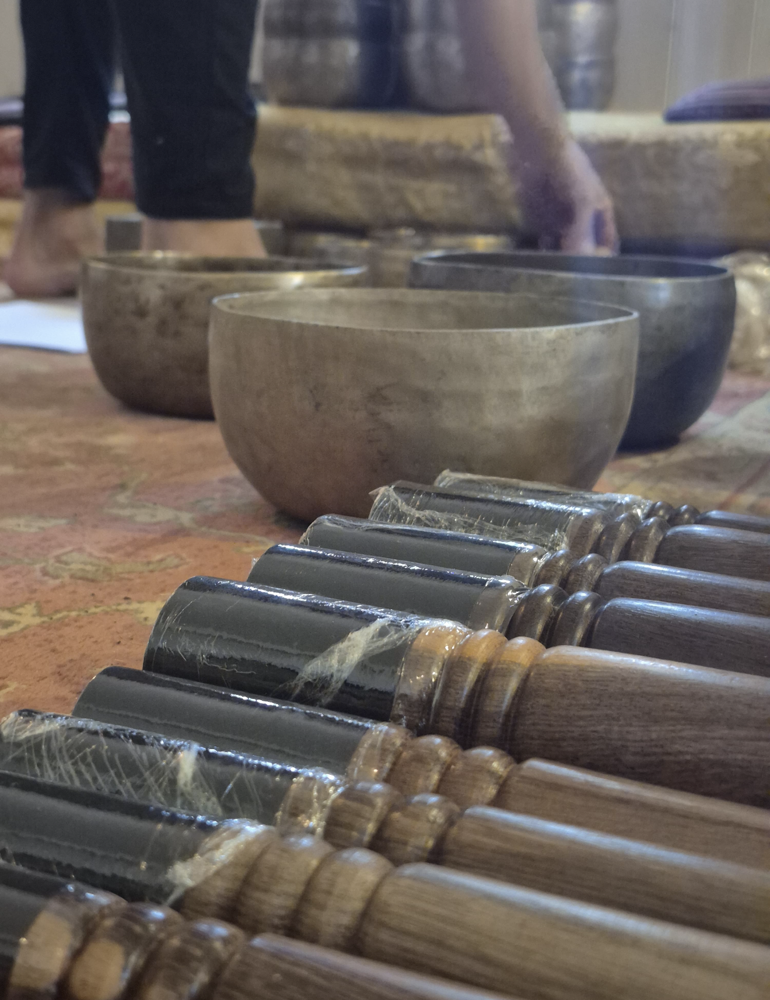
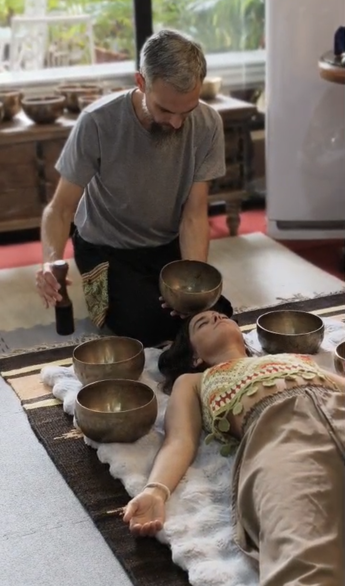

El Camino de la Contemplación y Regeneración
Este Curso repasa las técnicas energético-vibracionales y físicas de Tibet. Las mismas fueron recopiladas a través de la Tradición oral, de Maestro a Discípulo, hasta llegar a Occidente, para conseguir el estado de contemplación y serenidad que relaja la mente, repercutiendo en el cuerpo, potenciando los recursos creativos y activando la regeneración de nuestras células.
En esta experiencia teórico práctica nos sumergimos en la comprensión de la vibración como sostén y creación del Universo. Incorporamos técnicas de Meditación de gran impacto en el sistema nervioso. Aprendemos a pulsar y frotar un cuenco de sanación y las diferentes maneras de utilizarlos, en uno mismo y en otros, como herramientas de regeneración profunda, según la Tradición Bon Po.


Son técnicas orientales de fácil aplicación, pero al mismo tiempo de un gran poder. Este curso es una posibilidad de conectarte con la vibración esencial, de sentir lo que no se ve, de volver tangible lo invisible. De conectarte con el Antiguo Tibet y facilitar, a través de las técnicas, la materialización de una vida simple, serena y saludable.
Registro del Método en el Mundo
La transmisión de este conocimiento trasciende fronteras. Pedro Marano comparte estas herramientas sagradas de sanación no solo en Argentina, sino a nivel internacional, reflejado en sus formaciones dictadas en centros holísticos de Bangkok, Tailandia.
Formación dictada en Bangkok, Tailandia
Demostración: El efecto vibracional en el agua del organismo
Beneficios de la Práctica
- Reducen el stress.
- Reducen tensiones.
- Su frecuencia sonora armoniza energéticamente ambientes, cuerpo, mente y alma.
- Equilibra los hemisferios de nuestro cuerpo.
- Su vibración masajea las células del cuerpo y las aguas de nuestro organismo.
- Equilibra las emociones de manera sutil, limpia y despeja la mente en profundidad.
Seminario Presencial
Inversión Oficial
El valor incluye material de práctica en sala y Certificado de Participación final.
Solicitar Inscripción